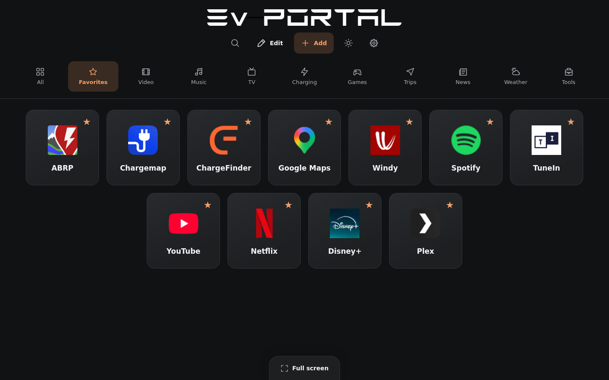

Guida a EvPortal per il browser Tesla
Un portale di scorciatoie per la tua Tesla
EvPortal è un portale gratuito e indipendente che riunisce i tuoi siti preferiti in una pagina pensata per il browser Tesla. Puoi usarlo anche nel browser del telefono o del computer. Le icone grandi aprono i servizi scelti senza riempire la schermata iniziale di testi o widget. Puoi personalizzare le scorciatoie, le categorie e il loro ordine, quindi scegliere un tema chiaro o scuro.

Iniziare dal browser del veicolo
A veicolo parcheggiato, apri l’indirizzo di EvPortal nel browser dell’auto. Salvalo tra i preferiti del browser, se questa opzione è disponibile, per ritrovarlo facilmente. Non serve installare un’app né accedere a un account Tesla per aprire il portale. Il pulsante «+» apre il catalogo per gestire le scorciatoie. In Impostazioni, scegli la lingua e la schermata iniziale. Le preferenze restano su questo dispositivo; un backup permette di conservare o trasferire le scorciatoie.
Ritrovare i tuoi servizi durante una ricarica
Aggiungi link ai tuoi strumenti per pianificare viaggi o ricariche, alle stazioni radio, alla musica e al meteo. Il catalogo è uguale per tutti, con categorie espandibili; puoi anche inserire un indirizzo personale. Ogni scorciatoia apre il sito del servizio, con le sue condizioni di accesso. EvPortal non controlla la ricarica e non invia comandi al veicolo. Consulta i contenuti di intrattenimento a veicolo parcheggiato.
Tocca una scorciatoia per aprire il servizio in una nuova scheda. Il tema scuro è predefinito; la tua scelta tra tema chiaro e scuro viene poi conservata. Le otto lingue sono disponibili in Impostazioni, con i nomi originali e le bandiere; l’arabo viene visualizzato da destra a sinistra.
Organizzare le scorciatoie
Tutti mostra per prime le scorciatoie aperte più spesso. A parità di aperture, mantiene il tuo ordine manuale. La classifica resta salvata dopo il ricaricamento.
In una categoria o nei Preferiti, tocca Modifica e sposta le scorciatoie usando le maniglie. La stella aggiunge un preferito e la matita permette di modificare. Tocca Fine quando hai terminato. Tutti mantiene la classifica automatica.
Con la tastiera, seleziona una maniglia, premi Spazio, sposta con le frecce e conferma con Invio. Esc annulla.
Aggiungere una scorciatoia o una categoria
Il pulsante «+» apre lo stesso catalogo per tutti. Espandi o comprimi una categoria, poi usa Aggiungi o Rimuovi su un servizio. Crea un collegamento e Crea una categoria si trovano in cima al catalogo. La lente cerca in tutte le scorciatoie.
Crea fino a cinque categorie personali con nomi di massimo 16 caratteri e un’icona a scelta. Altre icone apre le opzioni aggiuntive. La matita permette di modificare una categoria. Le categorie precedenti che superano questi limiti vengono conservate. Le categorie visibili si dispongono senza scorrimento orizzontale.
Un servizio può apparire in più categorie con un solo stato di preferito e un solo contatore; Tutti lo mostra una volta sola. In Modifica, apri Altre categorie per scegliere dove appare. Eliminare una categoria conserva i servizi presenti anche in un’altra categoria.
Scegliere la schermata iniziale
In Impostazioni → Schermata iniziale, scegli le categorie visibili e se aprire i preferiti all’avvio. Queste preferenze restano su questo dispositivo e non vengono incluse nei backup o nei trasferimenti QR. Il catalogo si gestisce con il pulsante «+».
Aspetto
In Impostazioni → Aspetto, mantieni la dimensione Standard oppure scegli Piccola. Mostra i nomi permette di conservare i nomi sotto i loghi o di nasconderli. La dimensione Standard e i nomi visibili sono le impostazioni predefinite; le tue scelte restano su questo dispositivo.
Telefono: inviare o ricevere
- In Impostazioni → Backup → Telefono, scegli Invia o Ricevi.
- Scansiona il QR visualizzato con il telefono.
- Per inviare dal telefono, scegli le sue scorciatoie o un backup e tocca Invia.
- Sullo schermo che riceve, tocca Aggiungi per conservare il backup su quel dispositivo.
- Per usarne il contenuto, apri I miei backup → Ripristina.
Il QR serve per i trasferimenti con il telefono. Creare un codice o un link non mostra un QR.
Il trasferimento è cifrato e valido per cinque minuti quando il servizio è disponibile. Invia un’istantanea senza sincronizzazione automatica. Ricevere un backup non sostituisce le tue scorciatoie.
Codice o link
In Impostazioni → Backup → Codice o link, Crea prepara un codice e un link EvPortal da copiare. Aggiungi accetta entrambi e salva una copia locale dopo la verifica. I file JSON restano disponibili in Altre opzioni. La pagina Telegra.ph creata è pubblica; la copia locale e la pagina online sono distinte.
Schermo intero Tesla
A veicolo parcheggiato, tocca Schermo intero. Su YouTube, scegli Vai al sito o Go to site per tornare a EvPortal in modalità Cinema. Le scorciatoie richiedono una nuova scheda, il cui comportamento dipende dal browser del veicolo.
Se la Tesla non viene riconosciuta, scegli Apri la modalità Cinema Tesla nelle impostazioni. Sul computer, il pulsante usa lo schermo intero normale. Il reindirizzamento può cambiare con gli aggiornamenti del veicolo o di YouTube.
Aprire un sito non garantisce la riproduzione video: paese, account, abbonamento e browser possono limitarla. Usa l’intrattenimento a veicolo parcheggiato.
Manuale Tesla · Metodo descritto da myTesla
Ripristinare un backup
In Impostazioni → Backup → I miei backup → Ripristina, scegli un backup in Su questo dispositivo o Online e controllane il contenuto. Solo Ripristina sostituisce le scorciatoie. Altre opzioni in Impostazioni permette di annullare l’ultimo ripristino. Aggiungere un codice, un link, un file o un trasferimento QR salva un backup senza applicarlo. Ogni browser conserva il proprio elenco locale.
Provare un’anteprima locale
Il QR usa l’indirizzo del portale aperto. Su un telefono, localhost o 127.0.0.1 indica il telefono stesso. Per provare tra dispositivi, entrambi devono poter accedere al portale e al servizio di trasferimento tramite HTTPS. I codici e i link dei backup usano l’indirizzo pubblico di EvPortal.
Informazioni e privacy
EvPortal è gratuito e non è affiliato a Tesla. Loghi e traduzioni sono inclusi nel sito. I contatori delle aperture restano nella tua configurazione, senza servizi di analisi. Telegra.ph viene contattato su tua richiesta; il token dell’account resta separato dalla condivisione. I siti aperti applicano le proprie politiche.
Domande frequenti
EvPortal è gratuito?
Sì. Il portale è gratuito e non è affiliato a Tesla. Alcuni siti collegati possono richiedere un account o un abbonamento; queste condizioni dipendono dal servizio.
Come preparo le scorciatoie sul telefono?
Apri EvPortal sul telefono e organizza le scorciatoie. In Impostazioni, Telefono permette trasferimenti QR in entrambe le direzioni. Sullo schermo che riceve, Aggiungi conserva un backup. Per usarne il contenuto, scegli poi I miei backup e Ripristina. La sola ricezione non sostituisce le scorciatoie.
EvPortal funziona senza connessione?
Il browser conserva la configurazione localmente, ma EvPortal non offre una modalità offline. Serve una connessione per caricare il portale, aprire i servizi e trasferire backup. Un file JSON permette di conservare una copia indipendente da ripristinare in seguito.